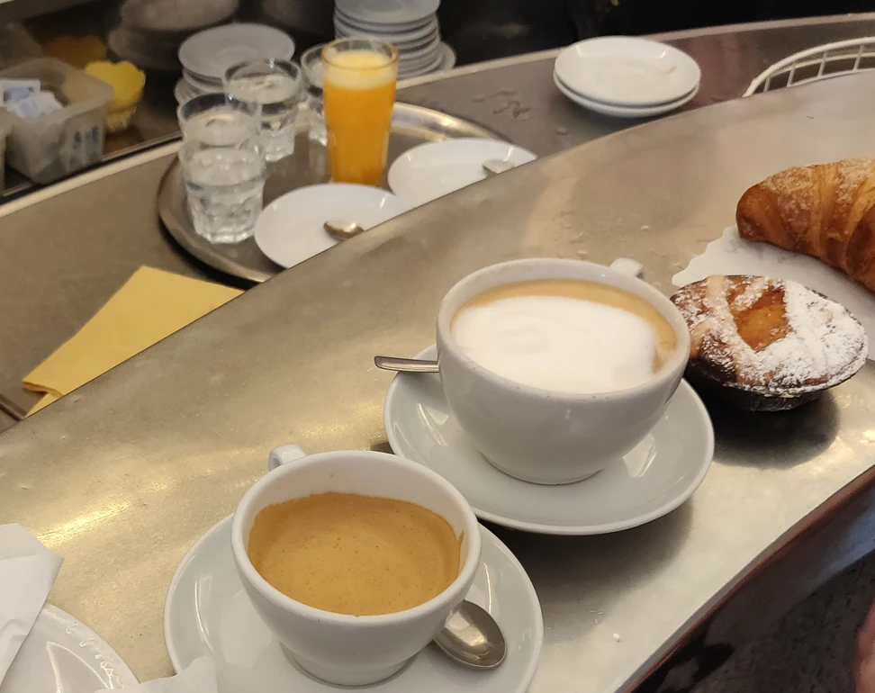
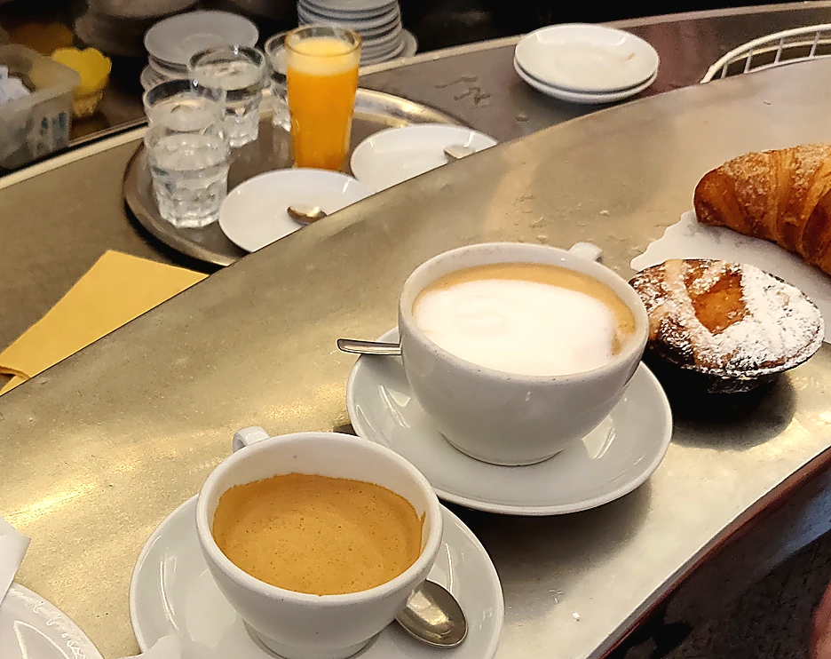

Buyer has to work too hard.
Clutter, weak crop, flat color, unclear product priority, or a page that makes the offer feel cheaper than it is.
Source-aware repair notes
These are public-source demonstrations, not client case files. The rule is strict: keep the original scene and improve its commercial signal instead of replacing it with an unrelated pretty background.
Clutter, weak crop, flat color, unclear product priority, or a page that makes the offer feel cheaper than it is.
Better crop, warmer light, cleaner hierarchy, stronger focus, and channel-ready framing without faking a new location.
Same-scene repair
This public-source example keeps the original cafe counter and only changes the commercial treatment: warmer tone, clearer contrast, sharper product priority, and a more usable sales surface.
Cafe / bakery source repair
This keeps the original counter, cups, pastry, and cafe context. The upgrade is not a background swap: it is a commercial crop and tonal repair that makes the strongest part of the source image easier to use.
Public source: Kurt Kaiser / Wikimedia Commons / CC0 1.0.


Production rule
A real visual refresh should feel like the merchant's image became sharper, more intentional, and easier to sell with. If the new version looks like a different shop, different room, or different product, it belongs in a separate concept mockup, not in source-aware proof.
More repair examples should come from owner-approved merchant photos or clean public-domain source images. Weak source photos are useful only when the repaired version can stay honest and visibly related to the original.
Full redesigns, new scenes, and generated premium hero images stay in the portfolio section as concept directions, not as proof that an existing customer photo was repaired.
Low-friction start
The first preview is meant to answer one question quickly: is this visual upgrade worth doing for the rest of the shop?
Request a Preview